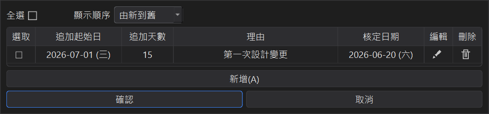
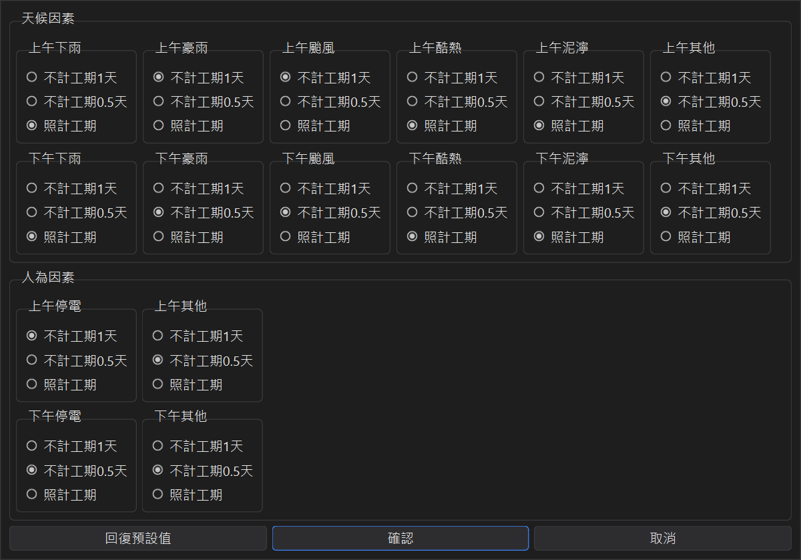

追加工期與不計工期條件
這兩項設定都在編輯工程的追加工期與天氣及人為因素不計工期條件區塊，每個工程各自一份， 跟編輯工程一起按確認才會存檔。
1、追加工期
按追加工期，列出這個工程所有的追加工期；按新增輸入：
| 追加起始日 | 從哪一天開始追加（不能早於開工日）。 |
|---|---|
| 追加天數 | 追加的工期天數，依工程的工期條件計算（工作天就是工作天數）。 |
| 理由 | 例如「第一次設計變更」。 |
| 核定日期 | 可以先不填，等核定後再補上。 |

存檔後，主視窗的含追加工期完工日與變動完工日都會把追加工期算進去； 日報表也會在追加起始日那一天顯示「今日開始追加工期」，並累計到「累計追加工期」。
2、天氣及人為因素不計工期條件
契約通常會規定哪些天候與人為因素可以不計工期。按天氣及人為因素不計工期條件， 上午、下午分開設定每一種因素：
● 不計工期 1 天 ● 不計工期 0.5 天 ● 照計工期

天候因素有下雨、豪雨、颱風、酷熱、泥濘、其他；人為因素有停電、其他。 預設值是：
| 上午 | 下午 | |
|---|---|---|
| 下雨、酷熱、泥濘 | 照計工期 | 照計工期 |
| 豪雨、颱風 | 不計 1 天 | 不計 0.5 天 |
| 天候其他 | 不計 0.5 天 | 不計 0.5 天 |
| 停電 | 不計 1 天 | 不計 0.5 天 |
| 人為其他 | 不計 0.5 天 | 不計 0.5 天 |
請依契約規定調整；按回復預設值可以還原成上表。 計算方式：同一個半天同時有天候與人為因素時取較多的那一個，上午加下午最多不計 1 天； 日報勾選停工時整天不計。本來就不計入工期的日子（例如週休日、國定假日）不會重複扣。
● 工期條件是日曆天時，天候因素預設全部照計工期（主視窗顯示「天氣不扣工期」）。
● 限期完工不扣任何工期，這個設定會停用。
設定好之後，每天在日報表填上天氣與人為因素，程式就會依這裡的條件扣除工期，請見日報表與變動完工日。